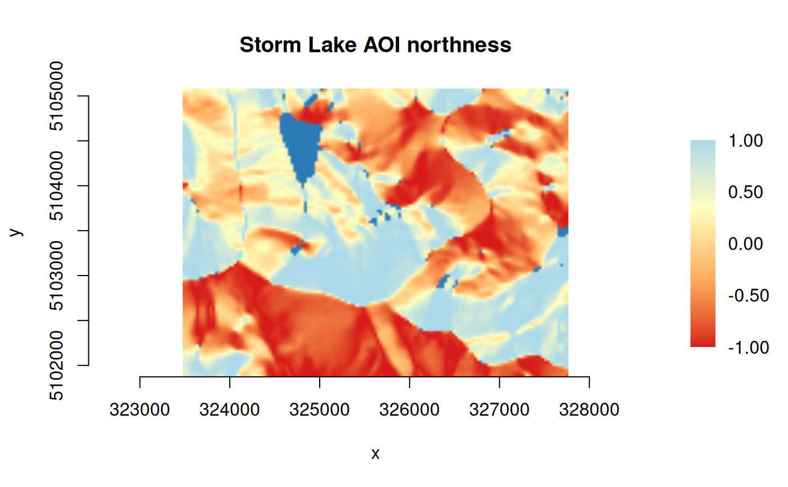

Functions to calculate simple DEM derivatives, currently northness() and
eastness() for transforming aspect degrees into the range -1:1.
Details
northness() is a cosine transform of aspect degrees, with any flat aspect
values (-1 if present) set to 90 degrees (east) as a neutral value:
eastness() is a sine transform of aspect degrees, with any flat aspect
values (-1 if present) set to 0 degrees (north) as a neutral value:
Note
No validation is done on the input values. The caller is responsible for ensuring input has valid type and range.
Examples
## plot northness from slope-masked aspect for the Storm Lake AOI
f_dem <- system.file("extdata/storml_elev.tif", package="gdalraster")
# slope degrees
f_slp <- basename(tempfile(pattern = "storml_slp", fileext = ".tif"))
f_slp <- file.path("/vsimem", f_slp)
dem_proc("slope", f_dem, f_slp)
# aspect
f_asp <- basename(tempfile(pattern = "storml_asp", fileext = ".tif"))
f_asp <- file.path("/vsimem", f_asp)
dem_proc("aspect", f_dem, f_asp)
# compute masked aspect as an in-memory raster
expr <- "ifelse(SLOPE >= 2, ASPECT, -9999)"
(ds_masked_asp <- calc(expr = expr,
rasterfiles = c(f_slp, f_asp),
var.names = c("SLOPE", "ASPECT"),
fmt = "MEM",
dtName = "Float64",
nodata_value = -9999,
setRasterNodataValue = TRUE,
return_obj = TRUE))
#> ℹ output written to: "in-memory-raster"
#> C++ object of class <GDALRaster>
#> • Driver: In Memory Raster (MEM)
#> • DSN: "in-memory-raster"
#> • Dimensions: 143, 107, 1
#> • CRS: NAD83 / UTM zone 12N (EPSG:26912)
#> • Pixel resolution: 30.000000, 30.000000
#> • Bbox: 323476.071971, 5101871.983031, 327766.071971, 5105081.983031
# diverging palette for northness
# adapted from "heatmap3" in ltc-color-palettes
# https://github.com/loukesio/ltc-color-palettes
pal <- c("#d7191c", "#fdae61", "#ffffbf", "#abd9e9")
plot_raster(ds_masked_asp, legend = TRUE, col_map_fn = pal,
pixel_fn = northness, na_col = "#2c7bb6",
main = "Storm Lake AOI northness")

# clean up
ds_masked_asp$close()
deleteDataset(f_slp)
#> [1] TRUE
deleteDataset(f_asp)
#> [1] TRUE